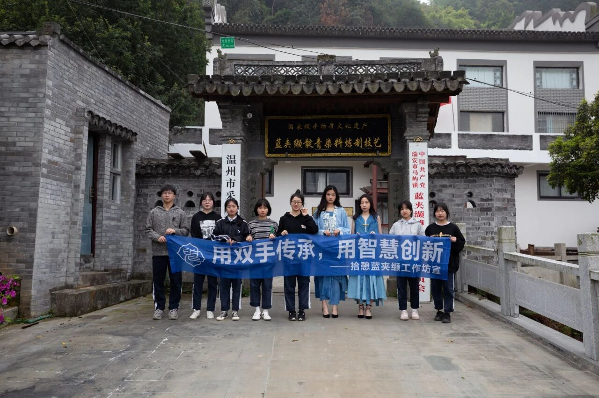

濒危与抢救
蓝夹缬技艺的保护现状可谓喜忧参半。喜的是国家高度重视，2006年便将其列入首批国家级非遗名录，瑞安等地也建立了博物馆和传承基地。忧的是，随着老一辈艺人的凋零，掌握核心雕版和打靛技艺的人越来越少。
瑞安市采成蓝夹缬博物馆的建立，是民间力量保护非遗的一个典范。馆长王河生不仅收藏了明清至民国时期的花版千余块，更致力于恢复完整的靛青种植和印染工艺，让蓝夹缬不再仅仅是博物馆里的陈列品，而是活态的技艺。
现代传承方式
除了博物馆展示，传承方式也在发生改变：
- 进校园： 温州多所中小学开设了蓝夹缬体验课，让孩子们从小接触这一传统文化。
- 文创开发： 将蓝夹缬纹样应用于丝巾、靠垫、手袋等现代生活用品，通过商业化运作反哺技艺传承。
- 学术研究： 越来越多的高校学者开始深入研究蓝夹缬的文化基因，为其建立数字化档案。

拾憩蓝夹缬工作坊